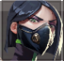
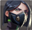

Controllers er den siste agentklassen som er ekstra god på å gjøre ulike operasjoner på et eller flere steder. Alle egenskapene deres er tilpasset til dette. Det er lett å bryte seg inn på et sted med en Controller.
Egenskapen «E» er tåker som forsvinner etter 20 sekunder. De kan brukes for å lukke posisjoner for å stoppe motstandere eller for å ikke la dem se hvordan laget ditt går for å sette bomben. Brimstone kan eie 3 tåker og hver av dem koster 100. Den ene får han på starten av runden men den gjenopprettes ikke etter at du har brukt den opp.
Egenskapen «Q» er en dam-egenskap som kaster en ildkule og når den treffer bakken, så hopper den litt lenger og når den faller helt, blir det dannet en stor ildkule på bakken som varer 8 sekunder. Den tar også mye skade. Denne kan brukes som en line-up for å ta motstandere vekk fra posisjoner eller for å ikke la motstanderne plassere eller deaktivere bomben. Denne egenskapen kan brukes bare en gang og koster 250.
Egenskapen «C» er et tårn som ikke kan ødelegges og det gir lagkameratene dine en effekt som gjør alt raskere; altså de skyter, løper, tar fram våpen og lader våpenet raskere. Denne effekten er som regel nyttig bare for Odin eller andre våpen som skyter raskt, eller for våpen som ikke skyter raskt i det hele tatt, for eksempel Judge eller Bucky. Likevel forstyrrer denne egenskapen ofte, og derfor er det ikke alltid verdt å kjøpe den. Den kan brukes to ganger og hver av dem koster 100.
Den ultimative egenskapen aktiverer en ildeffekt som tar ekstremt mye skade, og denne effekten fungerer på et bestemt område som Brimstone markerer selv. Denne ultimative egenskapen krever 7 poeng og kan stoppe motstandere eller ikke la dem plassere/deaktivere bomben.
Egenskapen «E» er en vegg av tåke som det altså er mulig å gå gjennom, men det er umulig å se gjennom den. Denne veggen er det mulig å skyte gjennom, så veggen er som en vanlig tåke men i form av en vegg. Siden Viper sine egenskaper baserer seg på at hun bruker gift, så har hun en kapsel med gift som gjenopprettes hver runde og når tåkene hennes ikke blir brukt. Den brukes når tåkene blir brukt. Veggen kan maksimalt stå 16 sekunder. Etter dette kan du aktivere den på nytt, men du må spare på giften din. Veggen er så lang at den lett kan dekke 60 meter. Når en motstander prøver å passere veggen, så får motstanderen 30 skade. Livene gjenopprettes når karakteren stopper å stå inne i tåken. En motstander kan ikke dø i en slik tåke, fordi når han har bare et liv igjen så fortsetter ikke motstanderen å miste liv. Veggen kan plasseres bare en gang per runde, og derfor er aktivering eller deaktivering av veggen det eneste du kan gjøre med den etter plasseringen. Denne veggen er gratis hver runde.
Egenskapen «Q» er en tåke som kastes som en hvilken som helst egenskap, men har evnen til å kastes langt eller på kort avstand. Denne tåken krever lineups for at du kan bruke den effektivt og kaste den hvor du vil. Tåken gir også 30 skade hvis noen går inn i den og den fortsetter å gi skade til den som er inne i den. Det finnes en gammel metode å drepe motstandere på som kalles for «swoop-peek», der «peek» betyr «å gå ut av» og «swoopy» er den som oppfant denne metoden. Metoden går ut på at du ser motstanderen litt før han ser deg, hvis du står i tåken og deaktiverer den. Derfor har du mer tid på å reagere og det er enklere å drepe motstanderen. Denne metoden har blitt fikset, men likevel er metoden nyttig fordi spillet fungerer slik at hvis du står på en riktig plass i tåken så fungerer metoden fortsatt, og generelt sett er det ingen som forventer at du sitter inne i tåken.
Egenskapen «C» er den samme som «Q» egenskapen til Brimstone, bare den tar mindre skade, står bare 6,5 sekunder og koster 200. Dette er også ikke en ildkule men en dam av gift eller liknende. En annen forskjell er at denne dammen gir en effekt som dobler skaden som kommer på en motstander. Effekten fornyes hvis motstanderen fortsatt står i dammen, og den forsvinner etter 2 sekunder hvis du går ut av dammen. Grunnen til at denne dammen er bra er at den kan Viper bruke to ganger per runde. Dette betyr at hun kan kombinere sin «Q»-egenskap og «C»-egenskap hvis bomben er plassert, og slik blir det vanskelig å deaktivere bomben.
Den ultimative egenskapen er en tåke som har en veldig stor radius og dekker nesten hele «A» eller «B» plant. Denne egenskapen står så lenge Viper er inne i den. Den forsvinner hvis Viper gikk ut av den og ikke kommer tilbake om 15 sekunder. Den ultimative egenskapen har samme egenskaper som de andre tåkene hennes.
Egenskapen «E» er en tåke som kan kastes på veldig lange avstander. Tåken varer 15 sekunder. Omen kan eie to tåker per runde og en tåke koster 100. Når Omen har brukt opp en tåke, så gjenopprettes en til tåke etter 40 sekunder.
Egenskapen «Q» er en flash som gjør motstanderne blinde, men de kan se deg hvis du kommer for nærme. Denne flashen demper også alle lydene til motstanderen. Denne flash er det umulig å ikke bli påvirket av hvis du prøver å se vekk fra den. Denne flashen fungerer på et bestemt område, men ikke på alle som ser på den. Derfor må du gå vekk fra posisjonen som flashen går mot for å ikke få effekter av den. En flash koster 300 og kan brukes kun en gang per runde.
Egenskapen «C» er en egenskap som teleporterer. Omen kan teleportere seg selv på små avstander. Når denne egenskapen bli brukt, så spilles det av en lyd på stedet Omen teleporterte seg fra. Samtidig (med en liten sjanse) spilles det av en stille lyd av vind på området hvor han teleporterte seg. Omen kan eie to «C»-egenskaper og en «C»-egenskap koster 150.
Den ultimative egenskapen er en teleporteringsegenskap som kan teleportere Omen hvor som helst på kartet. Omen velger selv hvor han har lyst å teleportere, så lages det en skygge av Omen på det stedet og hvis Omen ikke vil teleportere seg, så trykker han på «X» igjen. Det lages en høy lyd på stedet han teleporterer seg til, så det er vanlig at alle vet hvor Omen er hvis Omen bruker «X»-egenskapen sin. Denne egenskapen krever 7 poeng.
Egenskapen «E» er tåker som forsvinner etter 20 sekunder. De kan brukes for å lukke posisjoner for å stoppe motstandere eller for å ikke la dem se hvordan laget ditt går for å sette bomben. Brimstone kan eie 3 tåker og hver av dem koster 100. Den ene får han på starten av runden men den gjenopprettes ikke etter at du har brukt den opp.
Egenskapen «Q» er en dam-egenskap som kaster en ildkule og når den treffer bakken, så hopper den litt lenger og når den faller helt, blir det dannet en stor ildkule på bakken som varer 8 sekunder. Den tar også mye skade. Denne kan brukes som en line-up for å ta motstandere vekk fra posisjoner eller for å ikke la motstanderne plassere eller deaktivere bomben. Denne egenskapen kan brukes bare en gang og koster 250.
Egenskapen «C» er et tårn som ikke kan ødelegges og det gir lagkameratene dine en effekt som gjør alt raskere; altså de skyter, løper, tar fram våpen og lader våpenet raskere. Denne effekten er som regel nyttig bare for Odin eller andre våpen som skyter raskt, eller for våpen som ikke skyter raskt i det hele tatt, for eksempel Judge eller Bucky. Likevel forstyrrer denne egenskapen ofte, og derfor er det ikke alltid verdt å kjøpe den. Den kan brukes to ganger og hver av dem koster 100.
Den ultimative egenskapen aktiverer en ildeffekt som tar ekstremt mye skade, og denne effekten fungerer på et bestemt område som Brimstone markerer selv. Denne ultimative egenskapen krever 7 poeng og kan stoppe motstandere eller ikke la dem plassere/deaktivere bomben.
Egenskapen «E» er en vegg av tåke som det altså er mulig å gå gjennom, men det er umulig å se gjennom den. Denne veggen er det mulig å skyte gjennom, så veggen er som en vanlig tåke men i form av en vegg. Siden Viper sine egenskaper baserer seg på at hun bruker gift, så har hun en kapsel med gift som gjenopprettes hver runde og når tåkene hennes ikke blir brukt. Den brukes når tåkene blir brukt. Veggen kan maksimalt stå 16 sekunder. Etter dette kan du aktivere den på nytt, men du må spare på giften din. Veggen er så lang at den lett kan dekke 60 meter. Når en motstander prøver å passere veggen, så får motstanderen 30 skade. Livene gjenopprettes når karakteren stopper å stå inne i tåken. En motstander kan ikke dø i en slik tåke, fordi når han har bare et liv igjen så fortsetter ikke motstanderen å miste liv. Veggen kan plasseres bare en gang per runde, og derfor er aktivering eller deaktivering av veggen det eneste du kan gjøre med den etter plasseringen. Denne veggen er gratis hver runde.
Egenskapen «Q» er en tåke som kastes som en hvilken som helst egenskap, men har evnen til å kastes langt eller på kort avstand. Denne tåken krever lineups for at du kan bruke den effektivt og kaste den hvor du vil. Tåken gir også 30 skade hvis noen går inn i den og den fortsetter å gi skade til den som er inne i den. Det finnes en gammel metode å drepe motstandere på som kalles for «swoop-peek», der «peek» betyr «å gå ut av» og «swoopy» er den som oppfant denne metoden. Metoden går ut på at du ser motstanderen litt før han ser deg, hvis du står i tåken og deaktiverer den. Derfor har du mer tid på å reagere og det er enklere å drepe motstanderen. Denne metoden har blitt fikset, men likevel er metoden nyttig fordi spillet fungerer slik at hvis du står på en riktig plass i tåken så fungerer metoden fortsatt, og generelt sett er det ingen som forventer at du sitter inne i tåken.
Egenskapen «C» er den samme som «Q» egenskapen til Brimstone, bare den tar mindre skade, står bare 6,5 sekunder og koster 200. Dette er også ikke en ildkule men en dam av gift eller liknende. En annen forskjell er at denne dammen gir en effekt som dobler skaden som kommer på en motstander. Effekten fornyes hvis motstanderen fortsatt står i dammen, og den forsvinner etter 2 sekunder hvis du går ut av dammen. Grunnen til at denne dammen er bra er at den kan Viper bruke to ganger per runde. Dette betyr at hun kan kombinere sin «Q»-egenskap og «C»-egenskap hvis bomben er plassert, og slik blir det vanskelig å deaktivere bomben.
Den ultimative egenskapen er en tåke som har en veldig stor radius og dekker nesten hele «A» eller «B» plant. Denne egenskapen står så lenge Viper er inne i den. Den forsvinner hvis Viper gikk ut av den og ikke kommer tilbake om 15 sekunder. Den ultimative egenskapen har samme egenskaper som de andre tåkene hennes.
Egenskapen «E» er en tåke som kan kastes på veldig lange avstander. Tåken varer 15 sekunder. Omen kan eie to tåker per runde og en tåke koster 100. Når Omen har brukt opp en tåke, så gjenopprettes en til tåke etter 40 sekunder.
Egenskapen «Q» er en flash som gjør motstanderne blinde, men de kan se deg hvis du kommer for nærme. Denne flashen demper også alle lydene til motstanderen. Denne flash er det umulig å ikke bli påvirket av hvis du prøver å se vekk fra den. Denne flashen fungerer på et bestemt område, men ikke på alle som ser på den. Derfor må du gå vekk fra posisjonen som flashen går mot for å ikke få effekter av den. En flash koster 300 og kan brukes kun en gang per runde.
Egenskapen «C» er en egenskap som teleporterer. Omen kan teleportere seg selv på små avstander. Når denne egenskapen bli brukt, så spilles det av en lyd på stedet Omen teleporterte seg fra. Samtidig (med en liten sjanse) spilles det av en stille lyd av vind på området hvor han teleporterte seg. Omen kan eie to «C»-egenskaper og en «C»-egenskap koster 150.
Den ultimative egenskapen er en teleporteringsegenskap som kan teleportere Omen hvor som helst på kartet. Omen velger selv hvor han har lyst å teleportere, så lages det en skygge av Omen på det stedet og hvis Omen ikke vil teleportere seg, så trykker han på «X» igjen. Det lages en høy lyd på stedet han teleporterer seg til, så det er vanlig at alle vet hvor Omen er hvis Omen bruker «X»-egenskapen sin. Denne egenskapen krever 7 poeng.
Brimstone
Viper
Omen
Controllers
 
